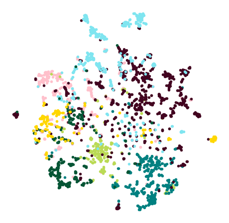

Node2vec in PyTorch Geometric on CORA dataset¶
Setup¶
!pip install -q torch-scatter -f https://pytorch-geometric.com/whl/torch-1.9.0+cu102.html
!pip install -q torch-sparse -f https://pytorch-geometric.com/whl/torch-1.9.0+cu102.html
!pip install -q torch-cluster -f https://pytorch-geometric.com/whl/torch-1.9.0+cu102.html
!pip install -q git+https://github.com/rusty1s/pytorch_geometric.git
import torch
from torch.nn import Embedding
from torch.utils.data import DataLoader
from torch_sparse import SparseTensor
import torch_cluster
from torch.ops.torch_cluster import random_walk
EPS = 1e-15
def maybe_num_nodes(edge_index, num_nodes=None):
if num_nodes is not None:
return num_nodes
elif isinstance(edge_index, Tensor):
return int(edge_index.max()) + 1 if edge_index.numel() > 0 else 0
else:
return max(edge_index.size(0), edge_index.size(1))
Node2vec¶
class Node2Vec(torch.nn.Module):
r"""The Node2Vec model where random walks of
length `walk_length` are sampled in a given graph, and node embeddings
are learned via negative sampling optimization.
Args:
edge_index (LongTensor): The edge indices.
embedding_dim (int): The size of each embedding vector.
walk_length (int): The walk length.
context_size (int): The actual context size which is considered for
positive samples. This parameter increases the effective sampling
rate by reusing samples across different source nodes.
walks_per_node (int, optional): The number of walks to sample for each
node. (default: :obj:`1`)
p (float, optional): Likelihood of immediately revisiting a node in the
walk. (default: :obj:`1`)
q (float, optional): Control parameter to interpolate between
breadth-first strategy and depth-first strategy (default: :obj:`1`)
num_negative_samples (int, optional): The number of negative samples to
use for each positive sample. (default: :obj:`1`)
num_nodes (int, optional): The number of nodes. (default: :obj:`None`)
sparse (bool, optional): If set to :obj:`True`, gradients w.r.t. to the
weight matrix will be sparse. (default: :obj:`False`)
"""
def __init__(self, edge_index, embedding_dim, walk_length, context_size,
walks_per_node=1, p=1, q=1, num_negative_samples=1,
num_nodes=None, sparse=False):
super(Node2Vec, self).__init__()
N = maybe_num_nodes(edge_index, num_nodes)
row, col = edge_index
self.adj = SparseTensor(row=row, col=col, sparse_sizes=(N, N))
self.adj = self.adj.to('cpu')
assert walk_length >= context_size
self.embedding_dim = embedding_dim
self.walk_length = walk_length - 1
self.context_size = context_size
self.walks_per_node = walks_per_node
self.p = p
self.q = q
self.num_negative_samples = num_negative_samples
self.embedding = Embedding(N, embedding_dim, sparse=sparse)
self.reset_parameters()
def reset_parameters(self):
self.embedding.reset_parameters()
def forward(self, batch=None):
"""Returns the embeddings for the nodes in :obj:`batch`."""
emb = self.embedding.weight
return emb if batch is None else emb[batch]
def loader(self, **kwargs):
return DataLoader(range(self.adj.sparse_size(0)),
collate_fn=self.sample, **kwargs)
def pos_sample(self, batch):
batch = batch.repeat(self.walks_per_node)
rowptr, col, _ = self.adj.csr()
rw = random_walk(rowptr, col, batch, self.walk_length, self.p, self.q)
if not isinstance(rw, torch.Tensor):
rw = rw[0]
walks = []
num_walks_per_rw = 1 + self.walk_length + 1 - self.context_size
for j in range(num_walks_per_rw):
walks.append(rw[:, j:j + self.context_size])
return torch.cat(walks, dim=0)
def neg_sample(self, batch):
batch = batch.repeat(self.walks_per_node * self.num_negative_samples)
rw = torch.randint(self.adj.sparse_size(0),
(batch.size(0), self.walk_length))
rw = torch.cat([batch.view(-1, 1), rw], dim=-1)
walks = []
num_walks_per_rw = 1 + self.walk_length + 1 - self.context_size
for j in range(num_walks_per_rw):
walks.append(rw[:, j:j + self.context_size])
return torch.cat(walks, dim=0)
def sample(self, batch):
if not isinstance(batch, torch.Tensor):
batch = torch.tensor(batch)
return self.pos_sample(batch), self.neg_sample(batch)
def loss(self, pos_rw, neg_rw):
r"""Computes the loss given positive and negative random walks."""
# Positive loss.
start, rest = pos_rw[:, 0], pos_rw[:, 1:].contiguous()
h_start = self.embedding(start).view(pos_rw.size(0), 1,
self.embedding_dim)
h_rest = self.embedding(rest.view(-1)).view(pos_rw.size(0), -1,
self.embedding_dim)
out = (h_start * h_rest).sum(dim=-1).view(-1)
pos_loss = -torch.log(torch.sigmoid(out) + EPS).mean()
# Negative loss.
start, rest = neg_rw[:, 0], neg_rw[:, 1:].contiguous()
h_start = self.embedding(start).view(neg_rw.size(0), 1,
self.embedding_dim)
h_rest = self.embedding(rest.view(-1)).view(neg_rw.size(0), -1,
self.embedding_dim)
out = (h_start * h_rest).sum(dim=-1).view(-1)
neg_loss = -torch.log(1 - torch.sigmoid(out) + EPS).mean()
return pos_loss + neg_loss
def test(self, train_z, train_y, test_z, test_y, solver='lbfgs',
multi_class='auto', *args, **kwargs):
r"""Evaluates latent space quality via a logistic regression downstream
task."""
from sklearn.linear_model import LogisticRegression
clf = LogisticRegression(solver=solver, multi_class=multi_class, *args,
**kwargs).fit(train_z.detach().cpu().numpy(),
train_y.detach().cpu().numpy())
return clf.score(test_z.detach().cpu().numpy(),
test_y.detach().cpu().numpy())
def __repr__(self):
return '{}({}, {})'.format(self.__class__.__name__,
self.embedding.weight.size(0),
self.embedding.weight.size(1))
Running on CORA dataset¶
import os.path as osp
from torch_geometric.datasets import Planetoid
dataset = 'Cora'
path = osp.join('data', dataset)
dataset = Planetoid(path, dataset)
data = dataset[0]
device = 'cuda' if torch.cuda.is_available() else 'cpu'
model = Node2Vec(data.edge_index, embedding_dim=128, walk_length=20,
context_size=10, walks_per_node=10,
num_negative_samples=1, p=1, q=1, sparse=True).to(device)
loader = model.loader(batch_size=128, shuffle=True, num_workers=2)
optimizer = torch.optim.SparseAdam(list(model.parameters()), lr=0.01)
def train():
model.train()
total_loss = 0
for pos_rw, neg_rw in loader:
optimizer.zero_grad()
loss = model.loss(pos_rw.to(device), neg_rw.to(device))
loss.backward()
optimizer.step()
total_loss += loss.item()
return total_loss / len(loader)
@torch.no_grad()
def test():
model.eval()
z = model()
acc = model.test(z[data.train_mask], data.y[data.train_mask],
z[data.test_mask], data.y[data.test_mask],
max_iter=150)
return acc
for epoch in range(1, 101):
loss = train()
acc = test()
print(f'Epoch: {epoch:02d}, Loss: {loss:.4f}, Acc: {acc:.4f}')
Plot Embeddings¶
from sklearn.manifold import TSNE
import matplotlib.pyplot as plt
@torch.no_grad()
def plot_points(colors):
model.eval()
z = model(torch.arange(data.num_nodes, device=device))
z = TSNE(n_components=2).fit_transform(z.cpu().numpy())
y = data.y.cpu().numpy()
plt.figure(figsize=(8, 8))
for i in range(dataset.num_classes):
plt.scatter(z[y == i, 0], z[y == i, 1], s=20, color=colors[i])
plt.axis('off')
plt.show()
colors = [
'#ffc0cb', '#bada55', '#008080', '#420420', '#7fe5f0', '#065535',
'#ffd700'
]
plot_points(colors)
